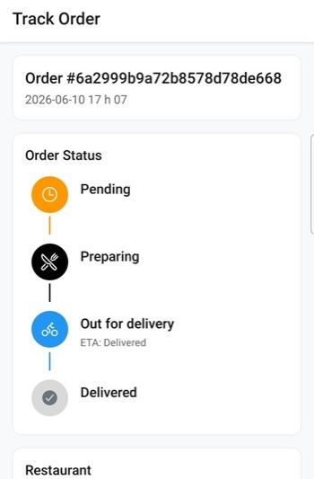

Order tracking
How customers follow an order from acceptance to delivery, and how that ties to the map and the driver app.
Follow the order without calling support
After checkout, the customer opens Track Order (from order history or the post-order flow). The screen shows the order id, timestamp, and a vertical status timeline: pending → preparing → out for delivery → delivered. Active steps are highlighted; later steps stay muted until they happen.
Restaurant contact details appear on the same screen so the customer can call if something is wrong with the meal itself — while delivery progress stays visible without opening a separate chat.
Typical customer path
- Place an order and wait for the restaurant to accept it.
- Open Order history, select the order, then Track order (or the equivalent deep link after payment).
- Watch the timeline advance as kitchen and driver statuses change on the shared order record.
- When the driver is en route, ETA copy updates when your logistics / intelligence data provides it.
Map before and during the order
The nearby map helps customers discover restaurants around them. Live courier movement on the customer map depends on your deployment; driver-side job handling and proof of delivery are documented under Logistics & POD.

Status timeline for a live order

Map of nearby restaurants